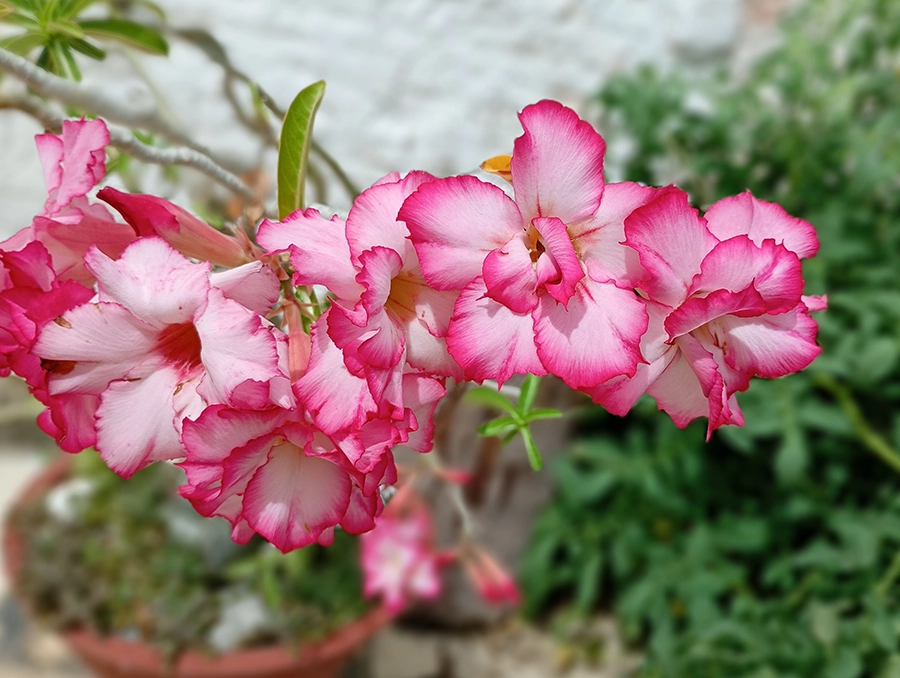

Flower Lovers
Growing Flowers
Nature and Beauty
Flower Advice
Flowers and Gifts
Flower Shopping

Flowers are one of nature's most beautiful creations. They come in many different shapes, sizes, colors, and fragrances, making the natural world more colorful and enjoyable. Some popular varieties include roses, tulips, sunflowers, lilies, daisies, and orchids. Each type of flower has its own unique appearance and meaning. For example, roses are often associated with love and romance, while sunflowers symbolize happiness and positivity. Flowers also play an important role in the environment. They provide nectar and pollen for bees, butterflies, and other pollinators, helping plants reproduce and supporting healthy ecosystems. In addition to their environmental benefits, flowers can improve the appearance of homes, gardens, parks, and special events. Many people enjoy growing flowers because gardening can be relaxing, rewarding, and a wonderful way to connect with nature. Whether given as a gift or planted in a garden, flowers bring beauty, happiness, and meaning to everyday life.